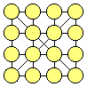
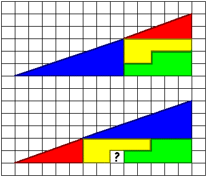
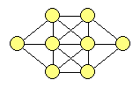
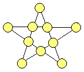
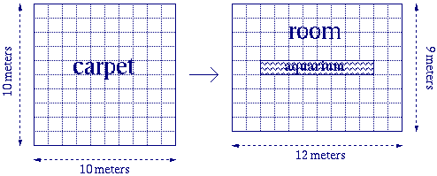

Click Here to Visit our Sponsor
Harder Riddles
|

|
The puzzles are marked with stars ( ) that show the degree of difficulty of the given puzzle.
) that show the degree of difficulty of the given puzzle.
![[BACK]](left.gif) back to the main puzzle page.
back to the main puzzle page.

i.
Cipher Square ![[New!]](new.gif)
The ciphers 1, 2, 3, 4, 5, 6, 7, 8, and 9 must be put
in the depicted square, in such a way that the sums of the numbers in each
row, column, and diagonal are equal.
The Question:
How should the numbers be arranged
in the square?
The Answer:
 Click here!...
Click here!...
Another Question:
The numbers 1 up to 16 must be placed in the circles of the square depicted below,
in such a way that the sum of the numbers in each row, column, and diagonal amounts to 34.
How should the numbers be arranged in the square?

Another Answer:
Click here!...
Yet Another Question:
The numbers 1 up to 25 must be placed in the circles of the square depicted below,
in such a way that the sum of the numbers in each row, column, and diagonal amounts to 65.
How should the numbers be arranged in the square?

Yet Another Answer:
Click here!...
![[UP]](back.gif) back to index
back to index

ii.
Four Fruits
In a contest, four fruits (an apple, a banana, an orange, and a pear)
have been placed in four closed boxes (one fruit per box).
People may guess which fruit is in which box.
123 people participate in the contest.
When the boxes are opened, it turns out that 43 people have guessed
none of the fruits correctly, 39 people have guessed one fruit correctly,
and 31 people have guessed two fruits correctly.
The Question:
How much people have guessed three fruits correctly, and how much people have guessed four fruits correctly?
The Answer:
Click here!...
back to index
iii.
The Last Word
General Gasslefield, accused of high treason, is sentenced to death by
the court-martial. He is allowed to make a final statement, after which
he will be shot if the statement is false or will be hung if the statement
is true. Gasslefield makes his final statement and is released.
The Question:
What could he have said?
The Answer:
Click here!...
back to index
iv.
Four Wise Words
A long, long time ago, two Egyptian camel drivers were fighting for
the hand of the daughter of the sheik of Abbudzjabbu. The sheik, who liked neither of
these men to become the future husband of his daughter, came up with a clever plan: a
race would determine who of the two men would be allowed to marry his daughter. And so
the sheik organized a camel race. Both camel drivers had to travel from Cairo to
Abbudzjabbu, and the one whose camel would arrive last in Abbudzjabbu, would be
allowed to marry the sheik's daughter.
The two camel drivers, realizing that this could become a rather lengthy expedition,
finally decided to consult the Wise Man of their village. Arrived there, they explained
him the situation, upon which the Wise Man raised his cane and spoke four wise words.
Relieved, the two camel drivers left his tent: they were ready for the contest!
The Question:
Which 4 wise words did the Wise Man speak?
The Answer:
Click here!...
back to index

v.
Dividing Paper
A piece of paper of size 5 by 5 with two blunted corners
should be divided into no more than two pieces (i.e. just one cut in total)
and be rearranged into size 6 by 4 as shown in the figure below.

The Question:
How should the the paper be cut?
The Answer:
Click here!...
back to index

vi.
Mirroring Clock
A boy leaves home in the morning to go to school.
At the moment he leaves the house he looks at the clock in the mirror.
The clock has no number indication and for this reason the boy makes a
mistake in interpreting the time (mirror-image). Just assuming the clock
must be out of order, the boy cycles to school, where he arrives after
twenty minutes. At that moment the clock at school shows a time that is two
and a half hours later than the time that the boy saw on the clock at home.
The Question:
At what time did he reach school?
The Answer:
Click here!...
back to index

vii.
The Triangle
The numbers 1, 2, 3, 4, 5, 6, 7, 8, and 9 must be put
in the depicted triangle, in such a way that the sums of the numbers on each
side are equal.
The Question:
How should the numbers be arranged
in the triangle?
The Answer:
Click here!...
back to index
viii.
Appearing Area
Consider the figures below. Both triangular figures have been built
up from the same four parts. The parts with the same color have exactly the
same shape and size! They are only moved around, which resulted in an
appearing area in the lower figure, marked with a question mark ('?').

The Question:
Where does the '?' hole come from?
The Answer:
Click here!...
back to index

ix.
Marbles Misweight
In front of you are 10 bags, filled with marbles.
The number of marbles in each bag differs, but all bags contain
ten marbles or more. Nine of the ten bags only contain marbles of 10 grams
each. One bag only contains marbles of 9 grams. In addition, you
have a balance which can weigh in grams accurate, and you are allowed to
use it only once (i.e. weigh a single time).
The Question:
How can you find out in one weighing, which bag contains the marbles of 9 grams?
The Answer:
Click here!...
back to index

x.
Number Net
The numbers 1 up to and including 8 must be put in the circles of the
depicted net. However, numbers in neighbouring circles must differ more than
1. So, for example, circles connected to a circle with a 4 may not contain a
3 or a 5.
The Question:
How should the numbers be
arranged in the circles of the net?
The Answer:
Click here!...
back to index

xi.
Nine Dots
Nine dots are placed in three rows of each three
dots, as shown in the picture. These nine dots must be connected by four
straight, connected lines (i.e. without 'lifting up the pen' in between).
The Question:
How should the four lines be drawn?
The Answer:
Click here!...
back to index
xii.
Number Star
Given the following figure:

The numbers 16, 18, 20, 22, 24, 26, 28, 28, 32, and 36 need to be
filled in in the circles of the figure, in such a way that
the sum of numbers of each line amounts to 100.
The Question:
How can you do this?
The Answer:
Click here!...
back to index
xiii.
Awkward Addition 
In addition shown below, each of the letters A, B, C, D, and E
represents one of the ciphers from 1 up to 5 (equal letters represent equal
ciphers and different letters represent different ciphers).
The first and last ciphers of the sum are given.
ABCDE
DABEC
EAABC
ACDAE
----- +
9CBA0
The Question:
What does the complete addition look like in ciphers?
The Answer:
Click here!...
Another Question:
In the addition below, all ciphers have been replaced by letters.
Equal letters represent equal ciphers and different letters represent different ciphers.
ABCABA
BBDCAA
ABEABB
ABDBAA
------- +
AAFGBDH
What does the complete addition look like in ciphers?
Another Answer:
Click here!...
back to index
xiv.
Crazy Cows
An old farmer died and left 17 cows to his three sons.
In his will, the farmer stated that his oldest son should get 1/2,
his middle son should get 1/3,
and his youngest son should get 1/9 of all the cows.
The sons, who did not want to end up with half cows,
sat for days trying to figure out how many cows each of them should get.
One day, their neighbour came by to see how they were doing after their father's death.
The three sons told him their problem.
After thinking for a while, the neighbour said:
"I'll be right back!"
He went away, and when he came back, the three sons could divide the cows according
to their father's will, and in such a way that each of them got a whole number of cows.
The Question:
What was the neighbour's solution?
The Answer:
Click here!...
back to index
xv.
Carpet Cutting
A carpet of size 10 by 10 meters should be
placed in a room of size 12 by 9 meters. In the center of the room,
there is an aquarium of size 8 by 1 meters
(see the figure below). The carpet should be cut into no more than two
pieces (i.e. one cut in total).

The Question:
How should the carpet be cut?
The Answer:
Click here!...
back to index
xvi.
Always & Never
It's always 1 to 6,
it's always 15 to 20,
it's always 5,
but it's never 21,
unless it's flying.
The Question:
What is this?
The Answer:
Click here!...
back to index
xvii.
Magic Square
Given the following magic square:
Fill in the magic square, in such a way that the sum of the numbers in each row (horizontally,
vertically, and diagonally) is 264, even if you hold the square upside down.
You are only allowed to use the digits 1, 6, 8, and 9, and each number may appear only
once in the square.
The Question:
How should this be done?
The Answer:
Click here!...
back to index
xviii.
Painting Problems
You have a painting with a string attached to it.
The string is attached to the upper two corners of the painting.
In the wall there are two nails, horizontally next to each other.
The string must be hung on the nails in such a way that the
painting falls down if any of the two nails is pulled out of the wall.
The painting must hang under the nails and must hang on the string.
The Question:
How must the painting be hung?
The Answer:
Click here!...
back to index

xix.
Gas, Water & Electricity
There are three houses (A, B, and C) and three utilities
(gas (G), water (W), and electricity (E)).
Each house must get a direct, uninterrupted connection to each utility,
but the various connections should not cross each other.
The Question:
How must the connections be made?
The Answer:
Click here!...
back to index

xx.
Seven Rows, Sixteen Numbers
In the figure on the right, you can fill in each of the sixteen numbers 1 up to 16, in such a way that
the sum of the numbers in each of the seven rows is 29.
The Question:
How should this be done?
The Answer:
Click here!...
back to index
Click Here to Visit our Sponsor
Copyright © 1996-2005. RJE-productions. All rights reserved.